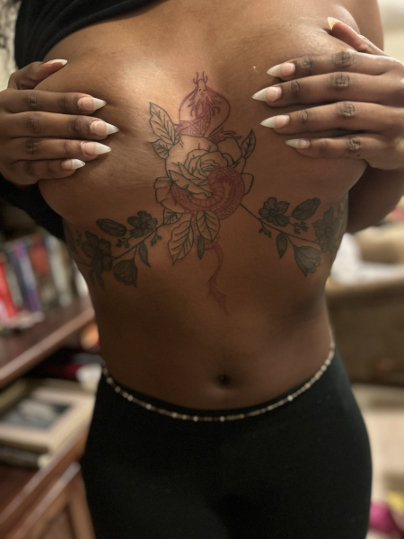
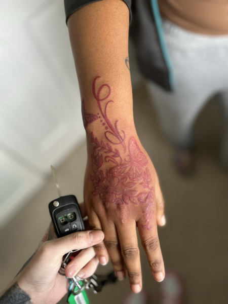
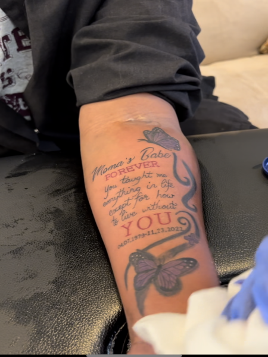

  
This website was made for to save the time of sending indivudual customers work and booking them indivudually, to attract customers, make booking independant, and be able to give you information about my shop and work.
Use the navigation bar to check out my gallery and see some of our recent work, or contact us to schedule an appointment.
I can be reached at: audipretzer@icloud.com